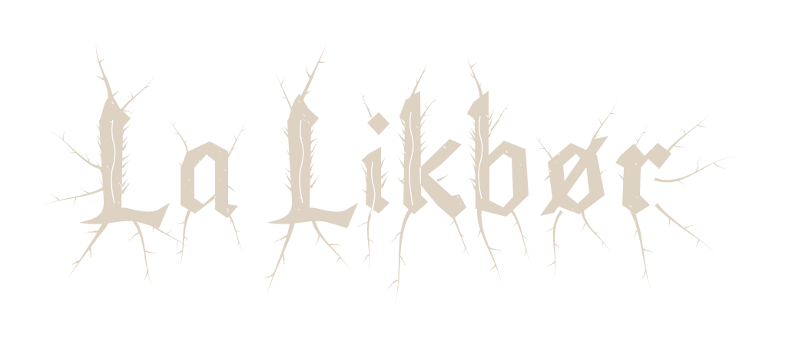

Estudo de identidade 01
Raízes / silêncio / matéria
Duas vozes. Um nome.
Lettering autoral e assinatura editorial.
Propostas independentes em SVG transparente.
01 Black Metal
Raízes, galhos secos e espinhos / desenho de letras próprio


02 Gothic Editorial
Serifa clássica, contraste delicado / clareza em tamanhos pequenos

Escala & legibilidade
Os mesmos arquivos, sem versões rasterizadas